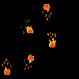

Leo's SpriteSheet
Concept Overview
"Leo n Mizu" is a planned 2D puzzle-platformer designed for a younger audience. The game focuses on two elemental characters—Leo (Fire) and Mizu (Water)—who must work together to navigate obstacles.
The core mechanic involves swapping control between the two characters to interact with the environment: Leo burns through wooden barriers, while Mizu freezes water to create platforms.
Technical Focus
Unity 2D
Sprite Animation
Pixel Art
State Machines